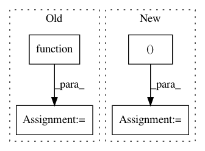

15fbd59581f649a513c9c0da6d33ec2bb2ef5263,scipy/optimize/_large_scale_constrained/tr_interior_point.py,,tr_interior_point,#Any#Any#Any#Any#Any#Any#Any#Any#Any#Any#Any#Any#Any#Any#Any#Any#Any#Any#Any#Any#Any#Any#Any#Any#Any#,271
Before Change
// Update Barrier Problem
subprob.update(state.barrier_parameter, state.tolerance)
// Compute initial values
fun0_subprob = subprob.function(z)
grad0_subprob = subprob.gradient(z)
constr0_subprob = subprob.constraints(z)
jac0_subprob = subprob.jacobian(z)
// Solve SQP subproblem
After Change
// Define initial parameter for the first iteration.
z = np.hstack((x0, s0))
fun0_subprob, constr0_subprob = subprob.fun0, subprob.constr0
grad0_subprob, jac0_subprob = subprob.grad0, subprob.jac0
// Define trust region bounds
trust_lb = np.hstack((np.full(subprob.n_vars, -np.inf),
np.full(subprob.n_ineq, -BOUNDARY_PARAMETER)))
trust_ub = np.full(subprob.n_vars+subprob.n_ineq, np.inf)
In pattern: SUPERPATTERN
Frequency: 3
Non-data size: 4
Instances
Project Name: scipy/scipy
Commit Name: 15fbd59581f649a513c9c0da6d33ec2bb2ef5263
Time: 2018-03-29
Author: antonior92@gmail.com
File Name: scipy/optimize/_large_scale_constrained/tr_interior_point.py
Class Name:
Method Name: tr_interior_point
Project Name: keras-team/keras
Commit Name: a18932cb658c012808dd78bbd7f5bf1fe712e6c9
Time: 2016-01-15
Author: francois.chollet@gmail.com
File Name: examples/neural_style_transfer.py
Class Name:
Method Name:
Project Name: senarvi/theanolm
Commit Name: 7ea1ff832a842d62b2fdccae7513f7e5216f1921
Time: 2017-10-17
Author: seppo.git@marjaniemi.com
File Name: theanolm/training/basicoptimizer.py
Class Name: BasicOptimizer
Method Name: __init__